IC · Video walkthrough
IC: maintain a training command board
Open an existing incident board, review its saved structure, record objective progress and a partial medical fill, save an internal note, preserve a useful map view and verify the command history.
Before you begin
- An authorized IC account and an existing active training command board; this lesson begins after command has been established.
- The fictional warehouse exercise has saved Search Division and Staging lanes, Squad 3, Engine 51 with Christopher Herrmann, a fictional gate marshal, an existing Safety Officer and a training reminder.
- Use your own disposable exercise for practice. The recorded Warehouse command remains active; no resource move, transfer, command end or call close is demonstrated.
- These actual browser captures span saved sessions. Unit status badges and elapsed times reflect their capture times; the lesson does not assert that they remain unchanged.
- This browser recording verifies manual map pan and Save View. Annotation placement, native hardware, device GPS, successful check-ins and offline replay remain unverified.
Chapters
- Open the existing training board
- Read the structure and resource pool
- Add a benchmark and record progress
- Describe a quantified medical need
- Save a partial fill and inspect its history
- Save an internal command note
- Read reminders and accountability honestly
- Preserve a useful incident-map view
- Verify the command history before handover
Watch the walkthrough
Step 1
Open the existing training board
This lesson maintains an existing IC command board in a fictional warehouse exercise. The screens come from the same saved exercise across browser sessions. Begin in Call Details and verify the Warehouse alarm name and training location. Active Command and Open Command Board identify the available route into this incident. Choose Open Command Board. Check the incident name again on Command Board, along with Wallace Boden as commander. Before practicing, make this identity check a habit; similar lane names can appear on different incidents.

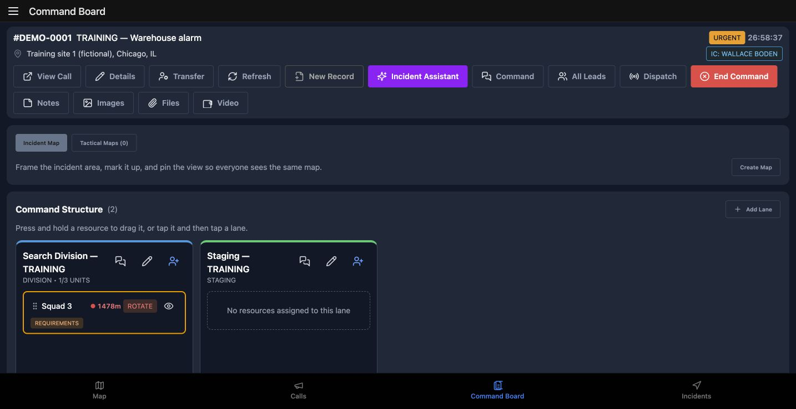
Practice
On an authorized practice incident, verify its name and commander before opening or changing its board.
Step 2
Read the structure and resource pool
Command Structure shows Search Division and Staging. Squad 3 is already in Search Division; Staging has no assigned resource. Rotate and Requirements are review cues on the saved assignment. They do not move the unit automatically. Scroll to Resources. All is selected, with Unassigned and Assigned available beside it. The pool contains Squad 3, Engine 51 and the fictional Exercise Gate Marshal. Engine 51 names Christopher Herrmann in its Officer or Team Lead position while the unit remains unassigned to a lane. Crew membership and command allocation describe different things. For practice, explain that difference before proposing a move.
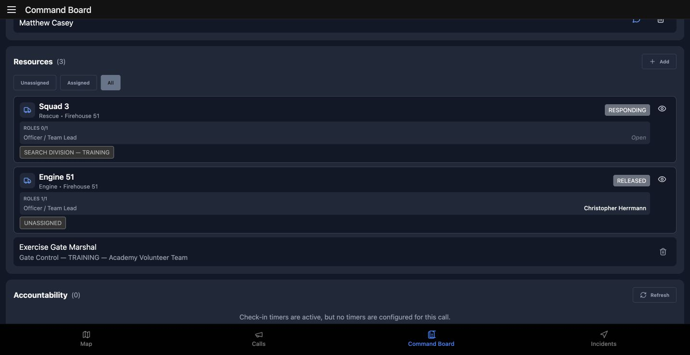
Practice
Compare an assigned search unit with an unassigned unit in the pool; explain the difference between a lane assignment and a riding position.
Step 3
Add a benchmark and record progress
In Tactical Objectives, choose Add. The empty section gives us a clear starting point. In Add Objective, select Benchmark under Type and enter the training primary-search objective. Choose Add to save it. A specific objective name gives the next operator something concrete to review. Open the objective and use Progress to set fifty percent. The returned details show fifty percent selected. Outcome, Close-out note and Complete Objective describe a separate close-out decision. This exercise leaves the objective incomplete. Practice updating progress without treating an estimate as a completed search.
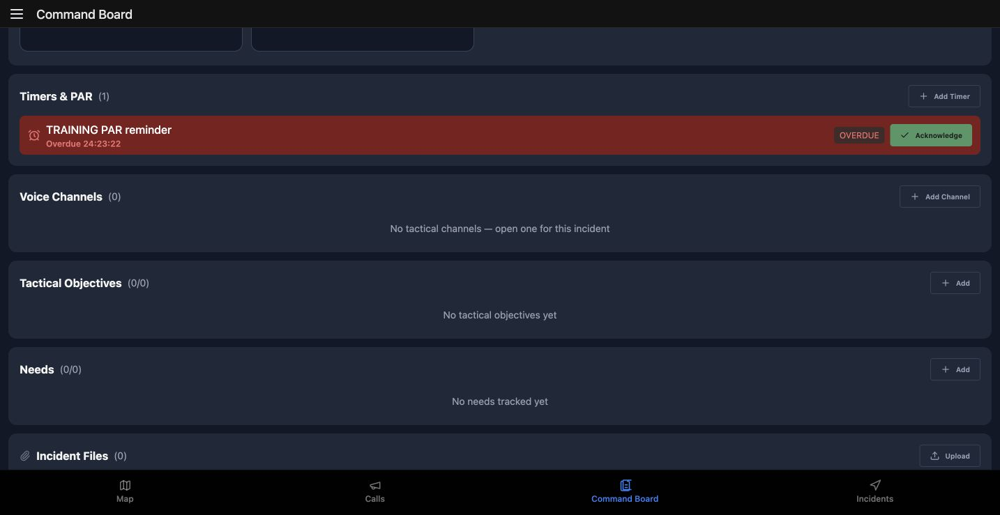
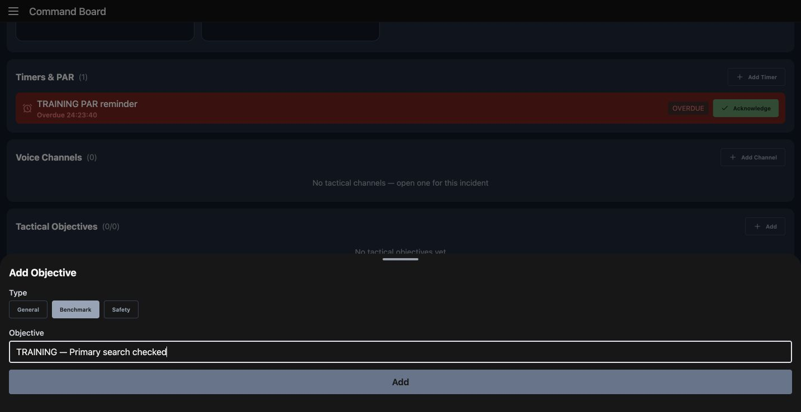
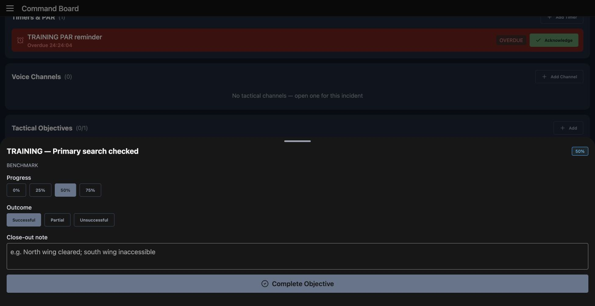
Practice
On a disposable practice board, add a named benchmark, set progress to fifty percent and inspect the details without completing it.
Step 4
Describe a quantified medical need
In the Needs section, use Add to open Add Need. Choose Medical under Category. Enter the training rehab need, set Qty to two, and use Details to explain the gap: two fictional rehab positions at staging, for internal tracking. Choose Add after checking the name and quantity. This example records a quantified need; it does not request a provider or demonstrate anyone arriving. Open the saved need. Its heading still shows an open medical need with zero of two filled. For practice, describe what remains outstanding before entering a fill.
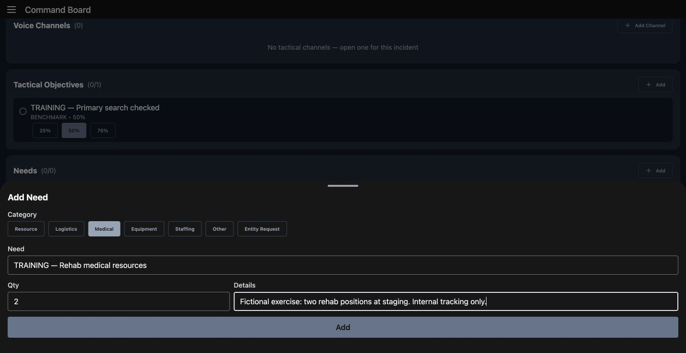
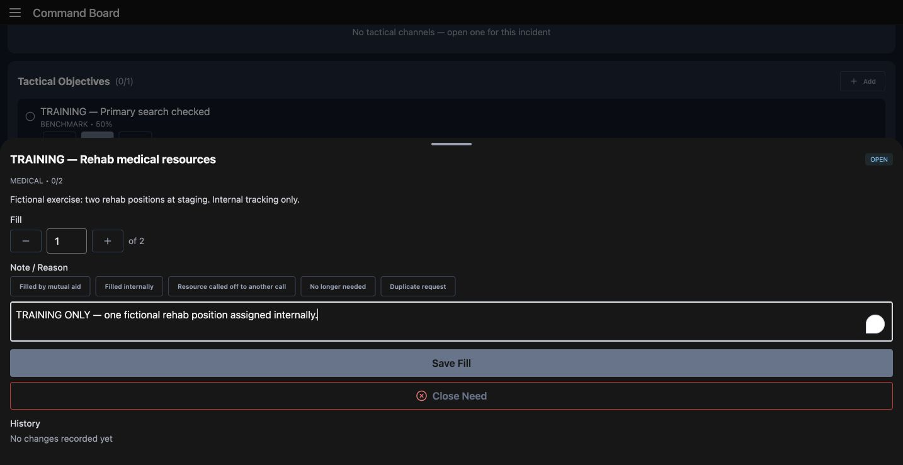
Practice
Prepare an internal medical need for two exercise positions with a clear location and scope; inspect its initial open quantity.
Step 5
Save a partial fill and inspect its history
In the need details, set Fill to one of two. Enter an explicit training explanation in Note or Reason, then choose Save Fill. The number is a tracking entry; it is not evidence of a person reaching staging. Reopen the need. Partial Fill and one of two now describe the saved result. History attributes the change to Wallace Boden and retains the training reason. The board also shows the need at one of two beside the objective at fifty percent. Leave the remaining gap visible. For practice, explain why a partial fill should remain distinguishable from completing or closing the need.
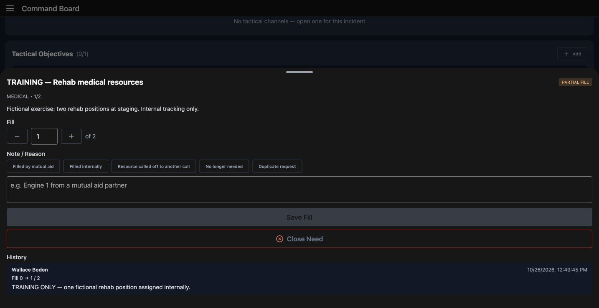
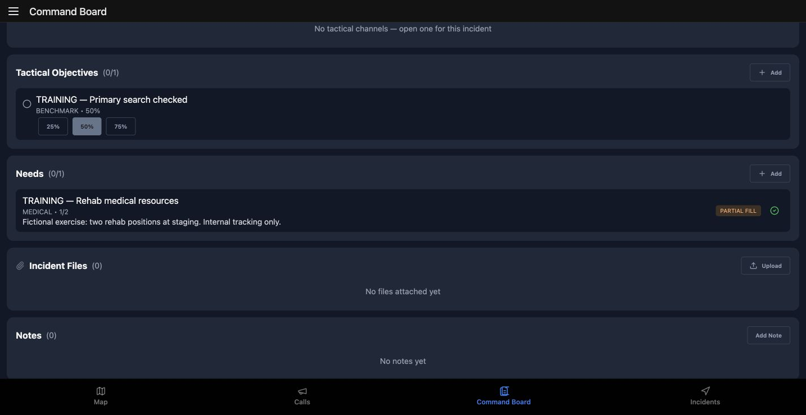
Practice
Record one of two fictional positions as filled with a reason, reopen the need, and verify the attributed history rather than assuming a full fill.
Step 6
Save an internal command note
Scroll to Notes and choose Add Note. Give the next operator a concrete location and scope. Our note keeps staging at the fictional west gate and explicitly says there is no operational deployment. Under Visibility, select Internal. The helper says the note is visible to command staff only and that the log records who added it, rather than its text. Public is a different choice. Check the intended audience, then choose Save. After reopening the board, the note retains its Internal badge and body. Below it, ICS Role Assignments names Matthew Casey as Safety Officer. That existing command role is separate from a unit riding position or lane assignment. Practice checking the note audience before using a shared command device.
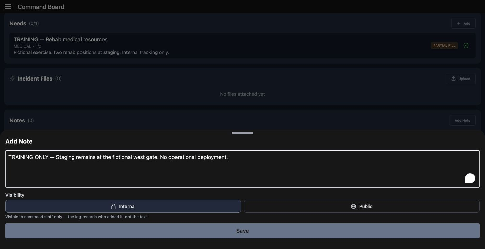
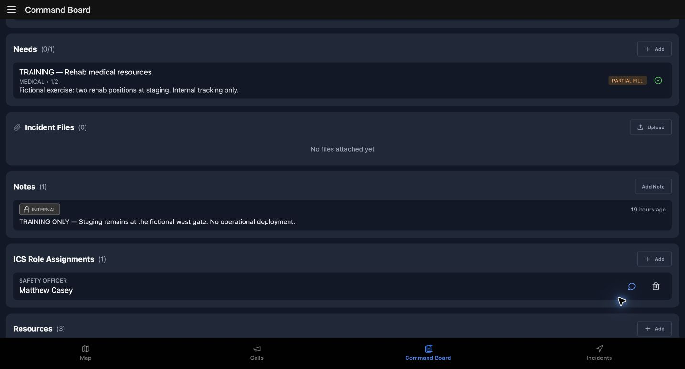
Practice
Write a clearly fictional internal staging note, save it, and confirm the visibility badge after reopening the board.
Step 7
Read reminders and accountability honestly
Timers and PAR shows the existing Training PAR reminder as overdue, with Acknowledge available. Its elapsed time reflects the saved exercise across sessions. This recording does not acknowledge or restart it. A reminder needs a deliberate operational response; its badge alone says nothing about a crew member's condition. Now read Accountability. The call says check-in timers are active, but no timers are configured. Refresh is visible, but this empty configuration cannot demonstrate a successful check-in or a PAR result. For practice, explain which information is missing before asking a crew to rely on this display.
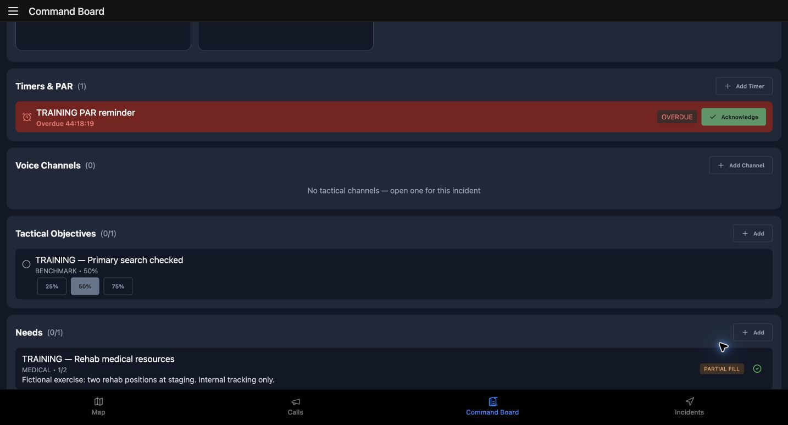
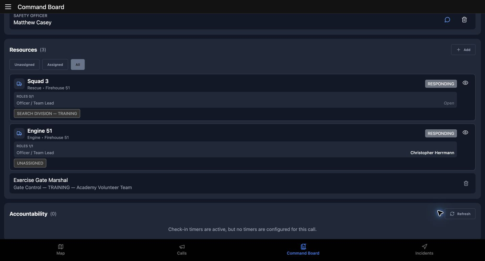
Practice
Distinguish an overdue reminder from a person's check-in result; identify the missing configuration before proposing a PAR exercise.
Step 8
Preserve a useful incident-map view
On Incident Map, check the actual Chicago street map and Squad 3 marker with its Search Division label. These are fictional training positions, not a demonstration of device GPS. Pan to frame the surrounding streets, then choose Save View. Here the manual pan moves the marker to the right of center. Reopening the incident map retains that framing. A full browser reload retains it too. Pan and Save View were verified in this web recording. Line, Area and Text are visible, but annotation placement was not verified. Native touch, location and offline behavior need separate device checks. Practice saving a useful view and checking the returned map.
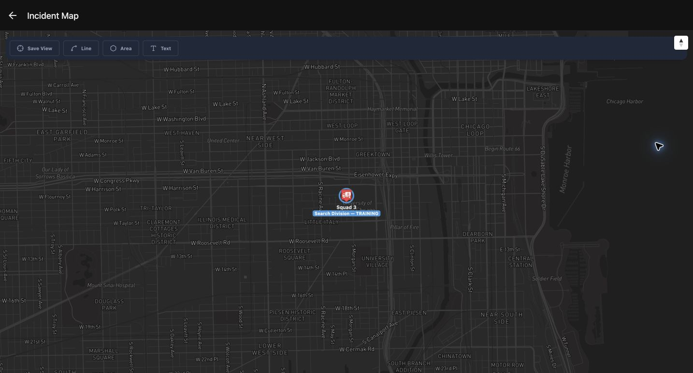
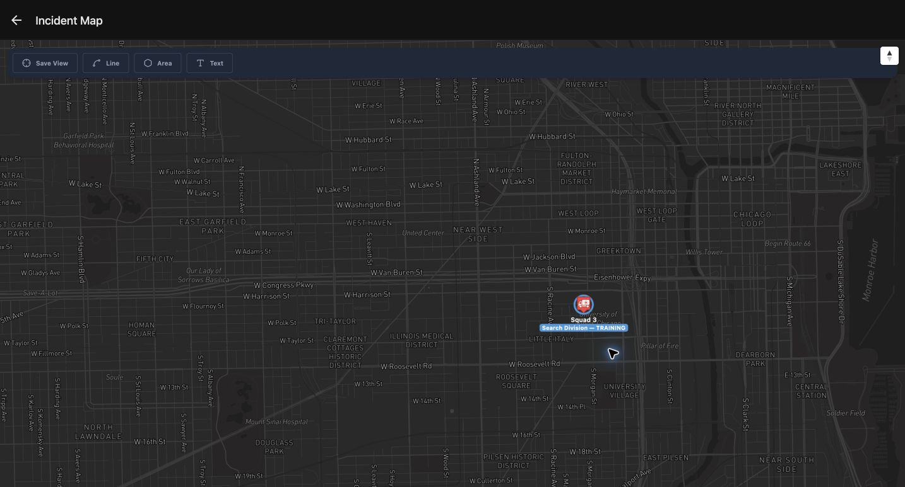
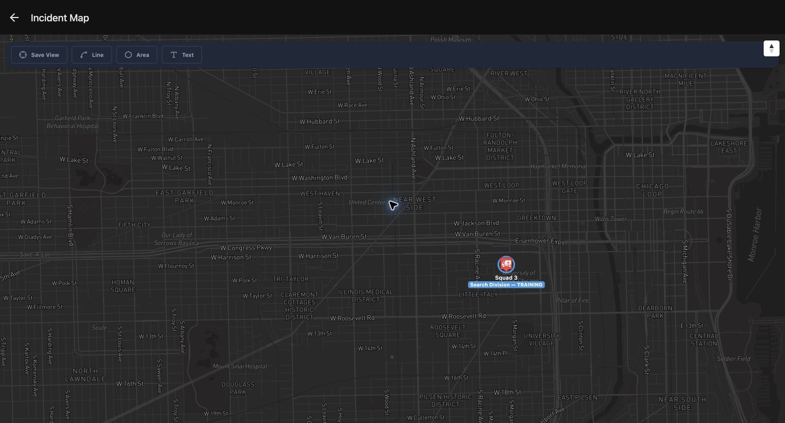
Practice
Pan an authorized training incident map, save its framing and verify the same area after reopening and reloading; do not treat the marker as device GPS proof.
Step 9
Verify the command history before handover
Return to the board and scroll to Incident Log. Read the timestamped objective addition, progress update and need-fill entry. They connect the working cards to attributed actions. The internal note has a non-public log marker with its author; its body stays out of this log entry. The map-created entry is also present after Save View. For handover practice, compare this history with the saved cards, identify the remaining one-of-two gap, and state that the objective is still incomplete. Leave this training command active. This lesson verifies recorded application state; it does not establish a field deployment, delivered notification or completed accountability check.
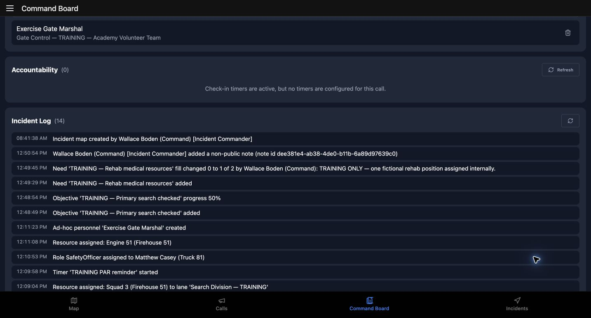
Practice
Compare the timestamped log with the saved objective, partial fill and note; leave the active exercise board intact for the next authorized operator.
Examples for your department
- Fire / EMS
- Use a training primary-search benchmark, a rehab need of two positions and the saved lane/pool comparison. Progress and partial fill remain application tracking entries.
- Community response
- At a fictional community event, track two medical cover positions, a partial fill and an internal staging note using the same captured controls.
- Search and rescue
- Use a search-sector benchmark and a clearly attributed internal rendezvous note. A reminder is separate from a confirmed team check-in.
- Security
- Read the saved command allocation and external gate-marshal entry before documenting a fictional perimeter need.
- Wildland
- Frame an incident map around the training area, preserve its view and use a benchmark to describe work still underway.
- Industrial
- Maintain an internal staging note and a quantified medical support gap during a fictional plant exercise.
Transcript
Download transcriptRead the complete transcript
IC: maintain a training command board Audience: Incident commanders, Division and group leads, Safety and accountability officers, Command support staff Open the existing training board This lesson maintains an existing IC command board in a fictional warehouse exercise. The screens come from the same saved exercise across browser sessions. Begin in Call Details and verify the Warehouse alarm name and training location. Active Command and Open Command Board identify the available route into this incident. Choose Open Command Board. Check the incident name again on Command Board, along with Wallace Boden as commander. Before practicing, make this identity check a habit; similar lane names can appear on different incidents. Practice: On an authorized practice incident, verify its name and commander before opening or changing its board. Read the structure and resource pool Command Structure shows Search Division and Staging. Squad 3 is already in Search Division; Staging has no assigned resource. Rotate and Requirements are review cues on the saved assignment. They do not move the unit automatically. Scroll to Resources. All is selected, with Unassigned and Assigned available beside it. The pool contains Squad 3, Engine 51 and the fictional Exercise Gate Marshal. Engine 51 names Christopher Herrmann in its Officer or Team Lead position while the unit remains unassigned to a lane. Crew membership and command allocation describe different things. For practice, explain that difference before proposing a move. Practice: Compare an assigned search unit with an unassigned unit in the pool; explain the difference between a lane assignment and a riding position. Add a benchmark and record progress In Tactical Objectives, choose Add. The empty section gives us a clear starting point. In Add Objective, select Benchmark under Type and enter the training primary-search objective. Choose Add to save it. A specific objective name gives the next operator something concrete to review. Open the objective and use Progress to set fifty percent. The returned details show fifty percent selected. Outcome, Close-out note and Complete Objective describe a separate close-out decision. This exercise leaves the objective incomplete. Practice updating progress without treating an estimate as a completed search. Practice: On a disposable practice board, add a named benchmark, set progress to fifty percent and inspect the details without completing it. Describe a quantified medical need In the Needs section, use Add to open Add Need. Choose Medical under Category. Enter the training rehab need, set Qty to two, and use Details to explain the gap: two fictional rehab positions at staging, for internal tracking. Choose Add after checking the name and quantity. This example records a quantified need; it does not request a provider or demonstrate anyone arriving. Open the saved need. Its heading still shows an open medical need with zero of two filled. For practice, describe what remains outstanding before entering a fill. Practice: Prepare an internal medical need for two exercise positions with a clear location and scope; inspect its initial open quantity. Save a partial fill and inspect its history In the need details, set Fill to one of two. Enter an explicit training explanation in Note or Reason, then choose Save Fill. The number is a tracking entry; it is not evidence of a person reaching staging. Reopen the need. Partial Fill and one of two now describe the saved result. History attributes the change to Wallace Boden and retains the training reason. The board also shows the need at one of two beside the objective at fifty percent. Leave the remaining gap visible. For practice, explain why a partial fill should remain distinguishable from completing or closing the need. Practice: Record one of two fictional positions as filled with a reason, reopen the need, and verify the attributed history rather than assuming a full fill. Save an internal command note Scroll to Notes and choose Add Note. Give the next operator a concrete location and scope. Our note keeps staging at the fictional west gate and explicitly says there is no operational deployment. Under Visibility, select Internal. The helper says the note is visible to command staff only and that the log records who added it, rather than its text. Public is a different choice. Check the intended audience, then choose Save. After reopening the board, the note retains its Internal badge and body. Below it, ICS Role Assignments names Matthew Casey as Safety Officer. That existing command role is separate from a unit riding position or lane assignment. Practice checking the note audience before using a shared command device. Practice: Write a clearly fictional internal staging note, save it, and confirm the visibility badge after reopening the board. Read reminders and accountability honestly Timers and PAR shows the existing Training PAR reminder as overdue, with Acknowledge available. Its elapsed time reflects the saved exercise across sessions. This recording does not acknowledge or restart it. A reminder needs a deliberate operational response; its badge alone says nothing about a crew member's condition. Now read Accountability. The call says check-in timers are active, but no timers are configured. Refresh is visible, but this empty configuration cannot demonstrate a successful check-in or a PAR result. For practice, explain which information is missing before asking a crew to rely on this display. Practice: Distinguish an overdue reminder from a person's check-in result; identify the missing configuration before proposing a PAR exercise. Preserve a useful incident-map view On Incident Map, check the actual Chicago street map and Squad 3 marker with its Search Division label. These are fictional training positions, not a demonstration of device GPS. Pan to frame the surrounding streets, then choose Save View. Here the manual pan moves the marker to the right of center. Reopening the incident map retains that framing. A full browser reload retains it too. Pan and Save View were verified in this web recording. Line, Area and Text are visible, but annotation placement was not verified. Native touch, location and offline behavior need separate device checks. Practice saving a useful view and checking the returned map. Practice: Pan an authorized training incident map, save its framing and verify the same area after reopening and reloading; do not treat the marker as device GPS proof. Verify the command history before handover Return to the board and scroll to Incident Log. Read the timestamped objective addition, progress update and need-fill entry. They connect the working cards to attributed actions. The internal note has a non-public log marker with its author; its body stays out of this log entry. The map-created entry is also present after Save View. For handover practice, compare this history with the saved cards, identify the remaining one-of-two gap, and state that the objective is still incomplete. Leave this training command active. This lesson verifies recorded application state; it does not establish a field deployment, delivered notification or completed accountability check. Practice: Compare the timestamped log with the saved objective, partial fill and note; leave the active exercise board intact for the next authorized operator. Examples for your department Fire / EMS: Use a training primary-search benchmark, a rehab need of two positions and the saved lane/pool comparison. Progress and partial fill remain application tracking entries. Community response: At a fictional community event, track two medical cover positions, a partial fill and an internal staging note using the same captured controls. Search and rescue: Use a search-sector benchmark and a clearly attributed internal rendezvous note. A reminder is separate from a confirmed team check-in. Security: Read the saved command allocation and external gate-marshal entry before documenting a fictional perimeter need. Wildland: Frame an incident map around the training area, preserve its view and use a benchmark to describe work still underway. Industrial: Maintain an internal staging note and a quantified medical support gap during a fictional plant exercise.